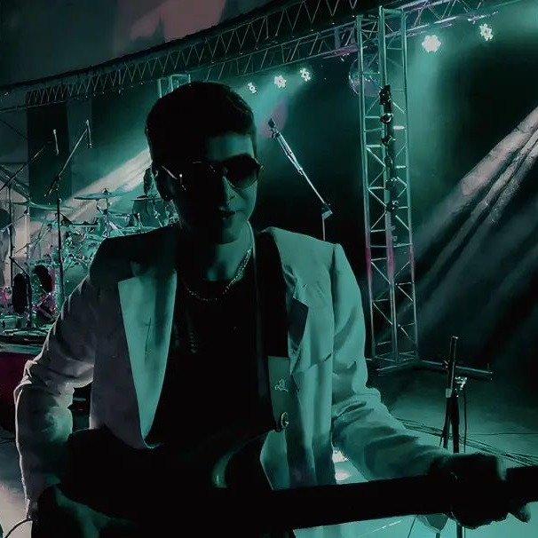

16 de Septiembre de 2025.
Vinilo en Blanco nació en 2015 en Villa Regina (Río Negro) como un proyecto escolar que rápidamente se convirtió en algo más. La incorporación de Pichu como baterista y vocalista, junto a Ariel en guitarra e Ixi en bajo, consolidó una formación que pronto descubriría su química única. El trío comenzó a forjar una identidad propia y a enamorar al público local con su energía.
En 2016 lanzaron su primer demo, Dicen, un tema que reflejaba su impulso por seguir sus sueños pese a las críticas. Entre shows el trío fue ganando reconocimiento y experimentando con su sonido: Pichu animó a Ixi a cantar en vivo por primera vez, mientras Ixi empezó a desarrollarse como productor, aprendiendo a grabar y moldear el sonido del grupo, y Ariel ampliaba su sonoridad con la primera pedalera que la banda le regaló.
Sin embargo, el crecimiento también trajo tensiones. Para 2019, diferencias creativas y conflictos personales provocaron su separación, un golpe que cada uno vivió de manera distinta. La pandemia permitió transitar esa pausa, mientras Ariel e Ixi intentaban reconstruir la química original sin éxito. La distancia les enseñó la importancia de escucharse y respetar los tiempos de cada uno.
En 2023, el reencuentro fue la chispa de una nueva etapa. Con madurez y amistades reparadas, la banda retomó su camino con una visión clara: crear con libertad y dejar un legado artístico. En 2024 lanzaron Héroes, marcando su regreso, y hoy trabajan en su primer álbum, con un sonido indie rock potente y letras profundas. Vinilo en Blanco sigue siendo un trío de amigos haciendo música auténtica, independiente y con la pasión intacta que los unió desde el principio.
10/12/2025 - Vinilo en Blanco: Entrevista en Radio Noventa (Youtube).
12/09/2025 - Vinilo en Blanco: la banda indie rock de Villa Regina que renació en 2024.
(2016) Dicen (Demo) No disponible
(2017) Parte 1(EP: Dicen, Depredador, Telarañas) No disponible
(2018) ??? (Album) No publicado
(2024) HEROES HASTA AHORA (Single)
(2025) ALMOHADA (Single)
(2025) Depredador (Single)
(2025) Telaraña (Single)
(2026) Dicen (Single)
(2026) Titeré (Single)
(2026) Perro Cabezón (Próximo Single y Album)